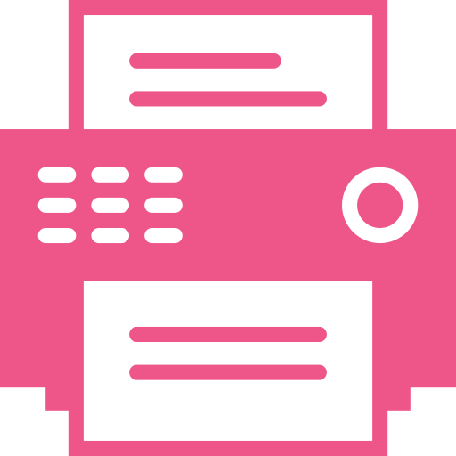
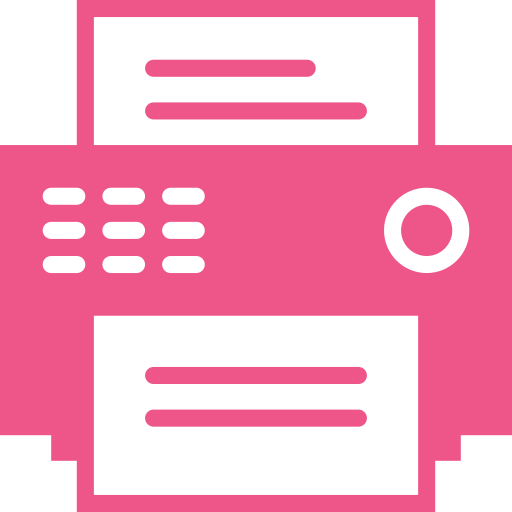

FAQ
What is Birthday Bounty?
In short, it's the stuff a business will give you for your birthday. It could be a product, service, or credit to spend in-store. Most importantly it's free.What makes Birthday Bounty different to coupons or discount vouchers?
You don't have to pay money in order to claim any of these deals. Birthday Bounty will only list offers that won't cost you a cent to claim.This means there is no minimum purchase, no minimum guests dining at your table and no member club sign up fees.
Birthday Bounty does list some store cash vouchers as birthday deals, which may not cover the entire cost of a purchase. If you don't want to see these, simply toggle them off using this button
 in the filter bar at the top of the screen!
in the filter bar at the top of the screen!
How do I get the free stuff?
Each business has it's own way of distributing their birthday freebies. We show you exactly how to claim each Birthday Bounty deal when viewing its details.Most commonly, you need to sign up
 to a mailing list or VIP club (always free) with the business, so they can email you a voucher
to a mailing list or VIP club (always free) with the business, so they can email you a voucher   or reminder on your birthday. Sometimes you will need to provide photo ID
 or reminder on your birthday. Sometimes you will need to provide photo ID  , like a driver's licence, to confirm your date of birth.
, like a driver's licence, to confirm your date of birth.
I'm throwing a massive party on my birthday... Can I still get free things?
Yes! Lucky for you, a lot of businesses offer a birthday deal for a few days before and/or after your birthday. Some even have the offer last for your whole birthday month. Use the 'Available On' dropdown boxes in the filter bar to view the Birthday Bounty you can claim on days other than your birthday.Why do you need my address?
To show you the Birthday Bounty that is closest to you! The address is used by Google Places, but it is not sent anywhere after that. It remains on your device's web browser for a period of time (so you don't have to continually enter it when you visit the site), but ultimately, we do not receive it.Why do you need my birthday?
To allow easier filtering when viewing bounty available on days other than your birthday. We cannot see your birthday. It is stored the same as addresses, described in the question above.Why isn't there any Birthday Bounty shown for my address?
Currently, Birthday Bounty is focusing on listing businesses in Melbourne and Sydney. If you'd like to start seeing birthday freebies in your area, drop us a line via our Facebook page, and we'll do our best to start helping you out!Where do you find these offers?
Some of them were found through our own online research, others may be sent to us directly by businesses themselves. We try to either find official online confirmation of a deal, or confirm with the business itself, before listing their offer on Birthday Bounty.Additionally, OzBargain and Chug (formerly Melbourne Cheapskate) provided us with a large amount of inital data. Check them out for more bargains in Australia.